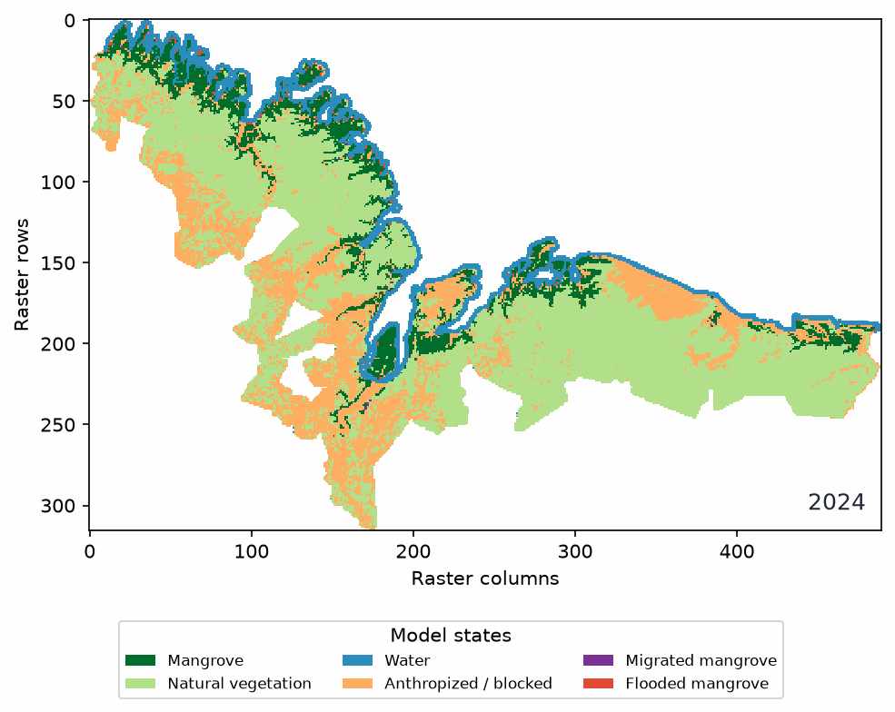

Prepare the grid
Load a categorical land-cover GeoTIFF and an aligned elevation GeoTIFF. A suitability layer and study-area mask are optional.
Open research software · Windows and Linux
Run spatial cellular scenarios with land-cover and elevation data. Follow annual change on a map, then inspect the tables behind it.
Windows 10/11 · stable 1.0.0 | Linux x86_64 · research preview

What it does
BR-MANGUE Studio brings the input data, model settings, and outputs together in one desktop workflow.
Load a categorical land-cover GeoTIFF and an aligned elevation GeoTIFF. A suitability layer and study-area mask are optional.
Map raster classes to model roles, choose the time span and coastal parameters, and select continuous or block processing.
Review annual maps, trajectories, transitions, figures, and run metadata. Exported files stay on your computer.
Get started
The desktop builds include Python and the project's required Python libraries. You do not need to install Python or packages separately. Your land-cover and elevation data are not included.
See system requirements and checksums →Evidence from test runs
Documentation and research
Start with the guide, review the benchmark records, or inspect the source code and JOSS-format paper draft.